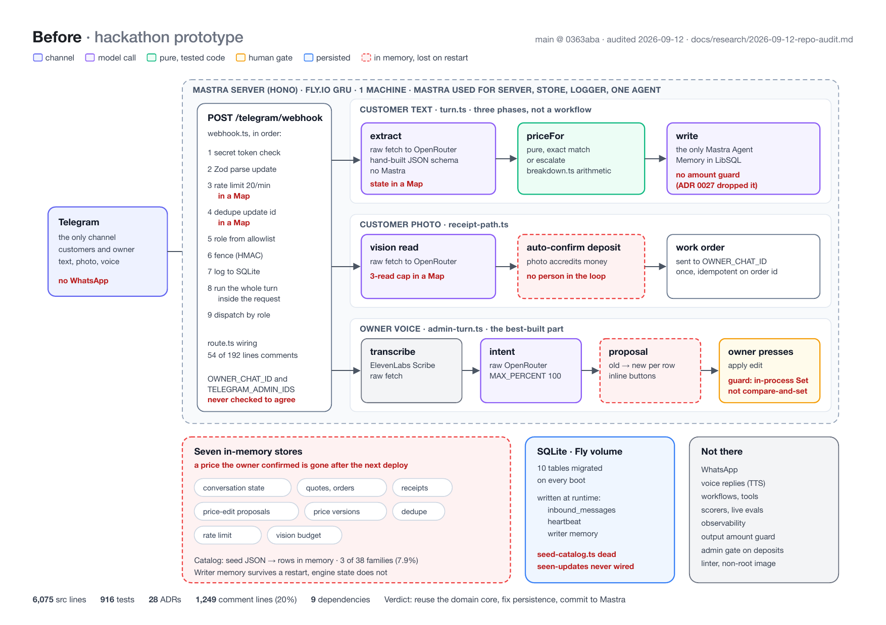
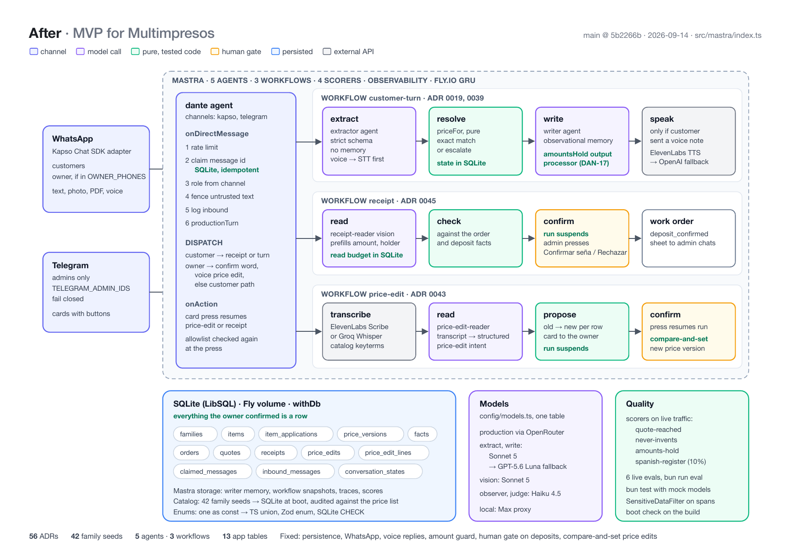

El 11 de septiembre entré a HackCBA, en Casa Naranja X, Córdoba, con tres amigos y una bolsa de dormir. Veinticuatro horas después habíamos perdido. El equipo ganador tenía un gran producto. Igual me volví a casa con un cliente que paga por lo que construimos, porque lo había vendido nueve días antes de la ceremonia de apertura.
El producto ya estaba vendido
Multimpresos es una imprenta de Córdoba capital. Tres personas contestan WhatsApp todo el día con una lista de precios de unas cuarenta páginas. Cada actualización se hace a mano, producto por producto.
Antes que yo, el dueño pagó por un agente de IA. Duró cuatro o cinco meses. Inventó direcciones de locales e inventó sucursales en el norte. Cotizó en 14.000 un trabajo de 1.500.000. Hubo clientes que llegaron al local con el celular en la mano mostrando la cotización falsa.
Tuve dos llamadas con el dueño el 2 de septiembre. La tarde de la hackathon me confirmó el costo mensual por WhatsApp: "si es más barato y más cómodo y práctico, vamos por este camino". Cinco horas más tarde los organizadores abrieron los tracks. Le pregunté al equipo si alguien tenía una idea mejor. Nadie tenía. Así que construimos el agente que yo ya había vendido, y lo llamamos Dante.
Dante tiene una sola regla. El motor calcula el precio. El modelo solo lo escribe. Un turno corre en tres fases, y la del medio nunca ve un modelo. La extracción lee el mensaje y lo convierte en una intención tipada. La resolución encuentra la fila y calcula el importe con una función pura y testeada. La escritura le entrega al modelo un número que no puede cambiar.
Si no hay match exacto en el catálogo, la conversación pasa a una persona. Sin adivinar, sin "más o menos". Ahí es donde mueren las sucursales inventadas.
Cuatro personas, cuatro carriles
- Talisman hizo seguridad. Un modelo de amenazas en la primera hora, un hook de gitleaks, el fenceo del texto no confiable y una auditoría completa antes de la demo.
- Pato conectó ElevenLabs. El dueño cambia un precio con un audio. El audio nunca escribe: propone, y una persona confirma. Pato tenía tres horas, de 21:00 a medianoche del viernes.
- Juan Bautista hizo el catálogo y la base de datos. Las filas del seed tipeadas desde la lista de precios, la función de precios, la matemática de módulos y los casos de precio.
- Yo hice la integración en Mastra. El servicio, los tipos compartidos, el bot de Telegram, el turno de tres fases y el cableado entre carriles.
Ninguno sabía git
Mis tres amigos son vibe coders. Buenos. Con un agente van rapidísimo. Ninguno había usado git en equipo.
Las primeras dos horas lo dejaron claro. Los commits iban derecho a main. Dos de ellos se llamaban "test: debe bloquear esto": una prueba del hook con secretos falsos, empujada a la rama de la que todos los demás tiraban. Las ramas se mergeaban main de vuelta y chocaban. Nadie leía el código de nadie.
Así que frené el trabajo y enseñé tres cosas. Tickets en Linear, cada uno con dueño y horario. Una rama por ticket, con el nombre del id. Un pull request con review, y los tests y el typecheck en verde antes del merge.
El primer pull request se mergeó a las 23:14 del viernes. A las ocho de la mañana del sábado ya eran 41. Mi commit favorito de la noche es de Pato: "Address the review on #2: separate our failures from the owner's". Ahí se entendió.
Primero el test, y dejá que el agente te interrogue
Un agente escribe código rápido. También escribe un test que le da la razón a su código. Así que la regla fue el test primero. Juan Bautista acordó los casos de precio antes de que existiera una línea de la función de precios. Uno de sus commits lo dice bien: "No amount leaves the engine without VAT, and a test that can prove it".
El segundo hábito fue grill-with-docs. Es una skill que te entrevista sobre un diseño, una pregunta difícil por vez, y va escribiendo la decisión: un ADR para lo que es difícil de revertir, un glosario para las palabras. La persona decide antes de que el agente adivine.
Escribimos 28 ADRs en menos de un día. Los títulos se leen como reglas: "Una conversación escalada terminó". "El store de comprobantes no tiene lector". "Un porcentaje no es un importe". Cuando dos carriles no coincidían a las dos de la mañana, la respuesta estaba en un archivo y no en la memoria de alguien.
El mejor bug de la noche fue uno que ningún test podía ver. Dos ramas hicieron cada una lo correcto. Una fenceaba el mensaje del cliente adentro del turno. La otra movía el fenceo al webhook. Las dos estaban en verde por separado. Mergeadas, cada mensaje llegaba al redactor envuelto en dos fences, y ninguna rama corría el código de la otra. La integración es el primer lugar donde un par así se ve, y git no tenía nada para decir al respecto.
Talisman auditó todo antes de la demo. Encontró ocho hallazgos. Verificamos cada uno contra el código antes de tocar nada. Tres se arreglaron. Cuatro los rechazamos por escrito. Uno quedó postergado.
Perdimos
En la demo Dante cotizó un producto real de la lista real, mandó a una persona una pregunta que no podía responder, tomó un cambio de precio por audio y leyó un comprobante de seña. El repo es público.
Los ganadores tenían un gran producto. Las reglas de HackCBA son claras sobre dónde tiene que arrancar: "Podés venir con la idea pensada, pero no con el repo empezado". El repo público de la hackathon del equipo ganador abre con un commit a las 20:17 del viernes, trece minutos antes de que empezara el hacking. Ese commit importa 338 archivos y 70.089 líneas desde un repo anterior. El README describe ese código como "la demo que se presentó a YC".
El primer puesto pagaba USD 500. El acuerdo con la imprenta vale más que eso, y estaba firmado antes de que escribiéramos el primer commit. Perder nos costó el trofeo, no la plata.
El código no se detuvo el sábado. En la hackathon los cuatro mergeamos 160 commits a main. En los dos días siguientes yo sumé 645 más.
Lo que la demo tapaba
La demo anduvo. Una auditoría del mismo commit, dos días después, dice sobre qué estaba parada.

Siete stores vivían en un Map adentro del proceso. Un precio que el dueño había confirmado por audio desaparecía en el siguiente deploy. Una foto del cliente acreditaba una seña sin nadie en el medio. El turno eran tres fases cableadas a mano, no un workflow, y un solo agente redactaba. Estaban cargadas tres de las treinta y ocho familias de productos de la imprenta, o sea el 7,9 por ciento de la lista. Una quinta parte del código fuente eran comentarios.
Nada de eso se nota en una demo de tres minutos. Todo eso decide si una imprenta puede contestarle a un cliente el lunes.
Cómo es ahora

Lo que sobrevivió es el núcleo del dominio: la función pura de precios, el match exacto o escalar, y el fence alrededor del texto no confiable. Todo lo demás se movió. Tres workflows de Mastra reemplazaron el cableado a mano. Trece tablas reemplazaron los Map, así lo que el dueño confirma es una fila. La seña suspende la corrida hasta que una persona aprieta un botón, y una edición de precio solo se aplica si la fila no cambió por debajo. Un procesador de salida compara el importe que escribió el redactor contra el que calculó el motor. Cuatro scorers corren sobre tráfico real. Hoy hay cuarenta y dos familias sembradas, y los ADRs pasaron de 28 a 56.
La parte que no era código
Dormimos en el piso del lugar. La comida era buena, no paraba nunca y era gratis. Me fui con tres amigos que ahora abren pull requests, y con algunos nuevos de otros equipos. Es lo más divertido que me pasó perdiendo algo.
Lo que le diría a un equipo de vibe coders antes de su primera hackathon:
- Enseñá git antes del primer commit. Diez minutos de ramas te salvan la noche.
- Llevá un cliente real. Así el resultado no depende del jurado.
Dante llega a la imprenta esta semana. Le haya parecido lo que le haya parecido al jurado el sábado, es el mostrador el que tiene que contestar con eso el lunes.
Soy Federico Sapuppo. Construyo agentes de IA que cotizan con datos reales en vez de inventarlos, y escribo sobre eso en fedesapuppo.com. El repo de la hackathon es público.